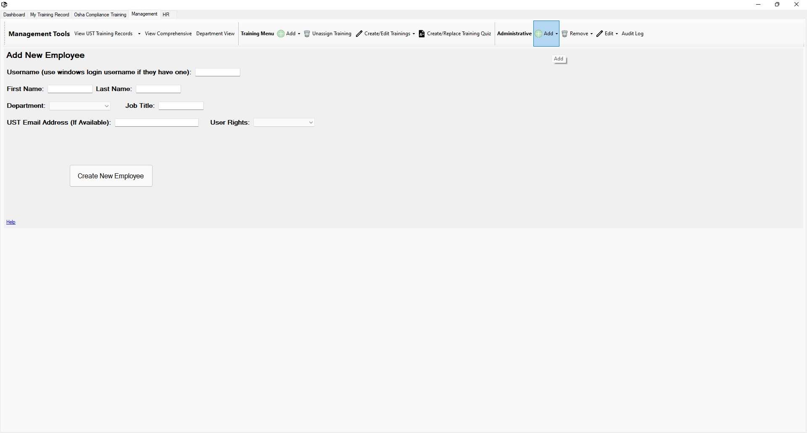

Return to Main Menu
Add an Employee
The "New Employee" button can be found in the "Administrative" section of the "Management Tools" toolbar under the "Add" dropdown.

Instructions:
Adding a New Employee
-
Navigate to the Add New Employee page.
-
Enter a username for the employee. If the employee already has a windows login (for the computers at UST),
enter their windows login username so they don't have to remember a new username and password.
-
Enter their first and last names
-
Select a Department.
-
Enter a Job Title for the employee.
-
If the employee has a UST email address, enter it. If not, leave blank.
-
Select the rights you wish the user to have in the uLearn application.